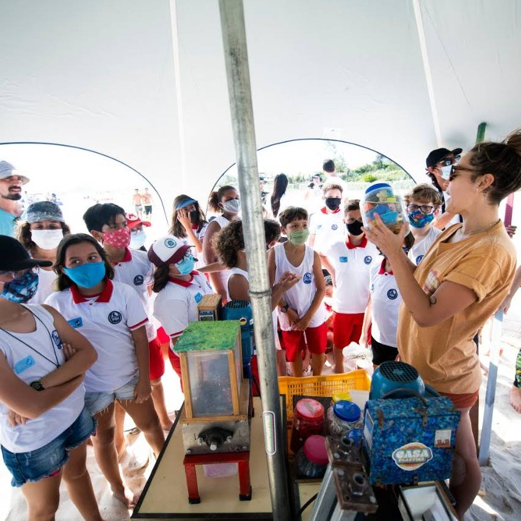
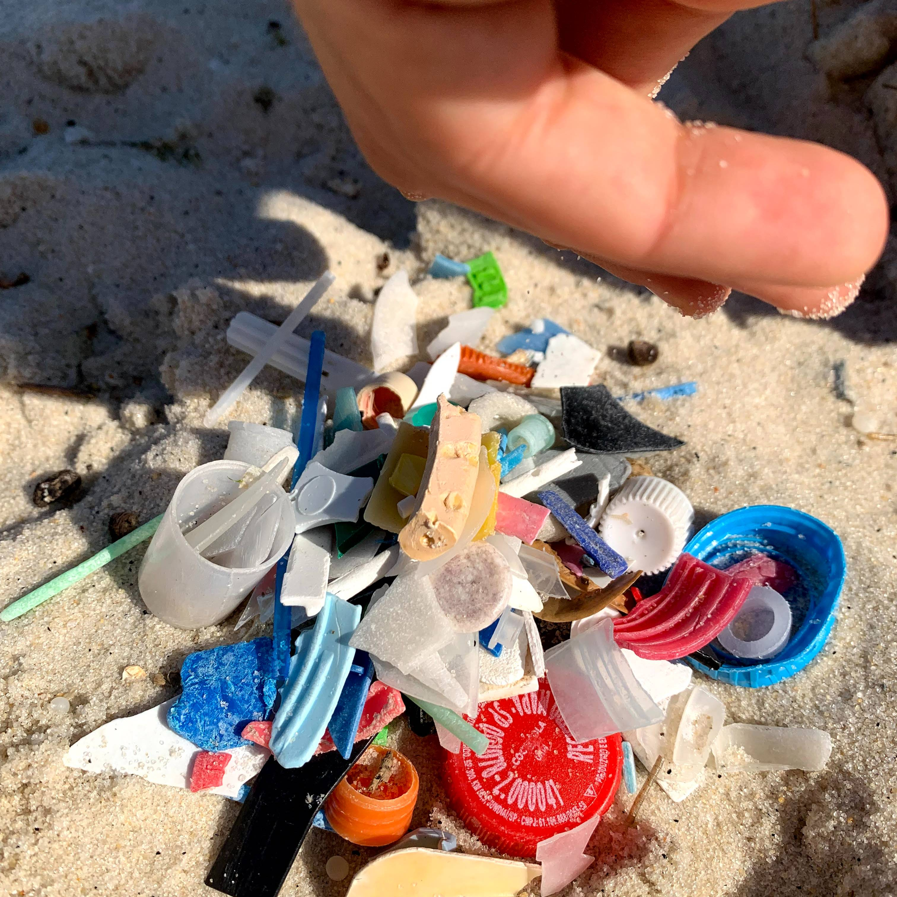
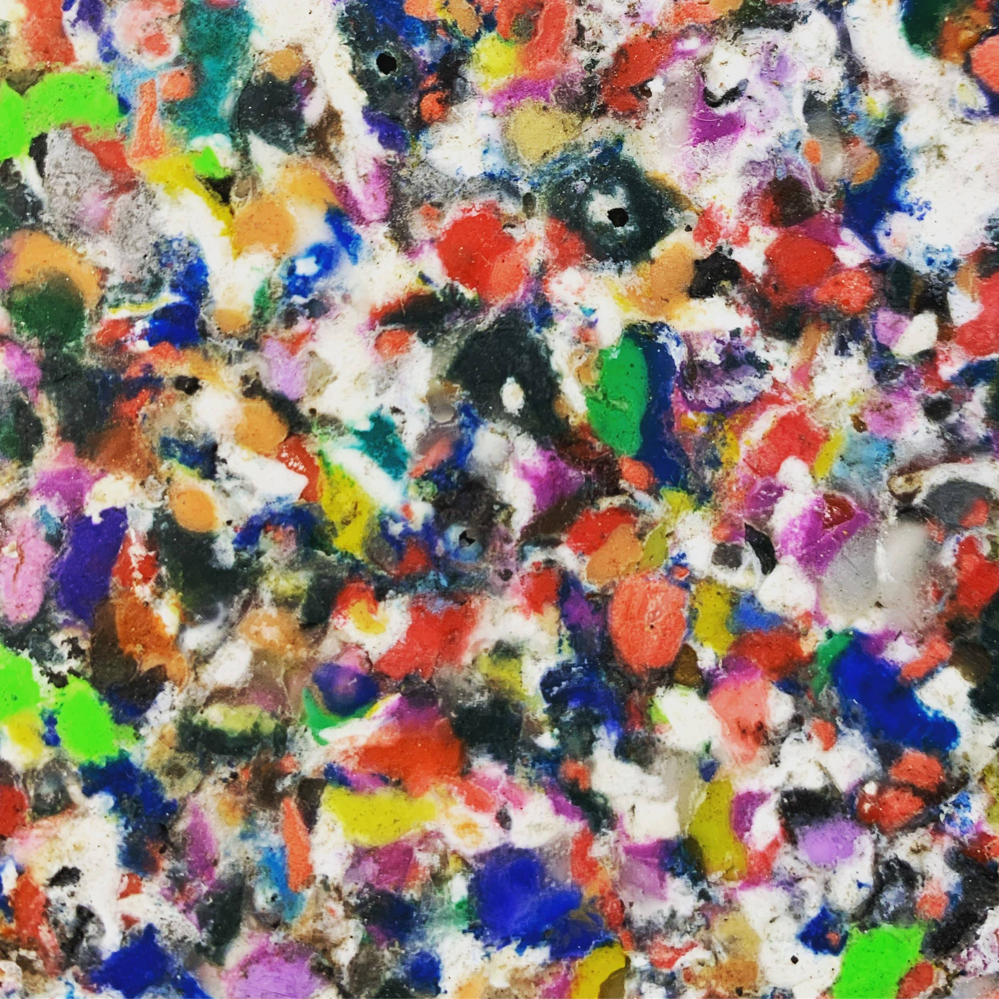

Quem Somos
A Casa Plastica é uma empresa fundada em 2018, dedicada à luta contra a poluição plástica e à promoção da sustentabilidade. Nossa missão é transformar resíduos plásticos, especialmente os retirados do oceano, em materiais úteis por meio da reciclagem, tecnologia e educação ambiental.
Nossa História
A Casa Plastica nasceu em Saquarema, impulsionada pela necessidade urgente de soluções práticas e inovadoras para o problema da poluição plástica, particularmente nos oceanos. Inspirados pelo movimento global Precious Plastic, começamos nossa jornada desenvolvendo máquinas acessíveis para a transformação de resíduos plásticos, como trituradores e extrusoras, com o objetivo de capacitar comunidades e conscientizar a sociedade sobre o impacto do plástico no meio ambiente.
Desde 2018, participamos de diversos eventos importantes, como o Festival de Música e Ecologia de Ilha Grande e o Saquarema Surf Festival, sempre promovendo a ideia de que o plástico pode ser um recurso transformador. Através da união de educação e tecnologia, temos realizado workshops, palestras e construído máquinas recicladoras para empoderar comunidades locais.
Missão
Nossa missão é reduzir a poluição plástica nos oceanos e transformar resíduos em materiais úteis e duráveis. Buscamos empoderar comunidades locais e promover uma economia circular, onde o plástico não seja visto como lixo, mas como uma matéria-prima valiosa.
Visão e Valores
Ser uma referência global em soluções sustentáveis para a reciclagem de plásticos, inspirando um futuro onde o plástico é totalmente reaproveitado, e onde as comunidades são capacitadas a liderar iniciativas de economia circular.
- Sustentabilidade: Agir em prol do meio ambiente e do uso consciente de recursos.
- Inovação: Criar tecnologias acessíveis e práticas para a transformação de resíduos plásticos.
- Educação: Capacitar e conscientizar pessoas sobre o impacto ambiental e as soluções viáveis para a reciclagem.
- Comunidade: Promover a união e o empoderamento das comunidades locais.
Iniciativas
Ao longo dos anos, desenvolvemos projetos e ações impactantes, incluindo a construção de máquinas de reciclagem, realização de workshops e participação em eventos nacionais e internacionais. Entre nossos projetos, destacam-se:
- Workshop Mexirica Navegante: Desenvolvimento e implementação de uma máquina 2-em-1 para trituração e extrusão de plásticos, usada em projetos comunitários e educativos.
- Eventos em parceria com a ONG Somos Natureza: Implementação de máquinas recicladoras e ações de empoderamento comunitário em Ilha Grande.
- Participação no Oi Rio Pro e Vivo Rio Pro: Conscientização ambiental e transformação de plásticos em campeonatos de surfe.
- Programa Centelha: Desenvolvimento de soluções inovadoras para a reciclagem de plásticos, com foco em replicabilidade e inovação tecnológica.